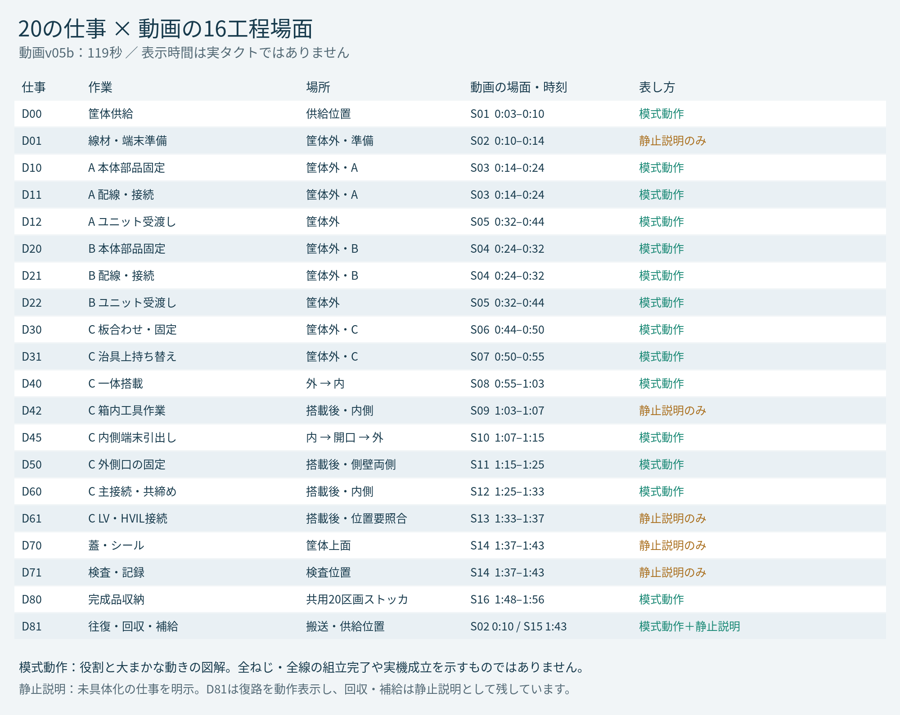

20仕事のうち、動画でどこまで示しているか
20仕事すべてに対応場面があります。大まかな動作を見せる仕事と、詳細が決まっておらず静止説明で残した仕事を分けました。全組立動作の完成率を表す表ではありません。
20仕事すべてに動画の対応場面あり
15仕事模式動作の場面あり
5仕事静止説明のみ
下の場面ボタンで、その開始位置へ移動します。
既存の119秒の動画v05bを再利用しています。新しい動画ファイルはありません。

線材準備D01、未特定の内部工具作業D42、LV/HVIL接続D61、蓋・シールD70、検査D71は静止説明です。回収・補給を含むD81は、パレットの復路だけを動作で示しています。
仕事ごとの照合先と、残る未確定事項
手先欄は比較候補を含みます。仕事名を選ぶと、既存の詳細図との対応を確認できます。
| 仕事・場所 | 表し方・動画の位置 | 現在の担当・手先の記載 | 既存の未確定事項 |
|---|---|---|---|
| D00 筐体供給 供給位置 | 模式動作 | 主担当：XYZ 手先：H06 筐体 補助：なし | 許容把持面・重心・パレット受け位置・20枠の実寸・XYZ移動距離。 |
| D01 線材・端末準備 筐体外・準備 | 静止説明のみ | 主担当：準備設備 手先：入荷・加工範囲未定 補助：設備側で別計上 | 入荷単位・全線の両端・線長・品番・加工条件・加工設備 |
| D10 A 本体部品固定 筐体外・A | 模式動作 | 主担当：A主腕 手先：H01 / H02 補助：工具 T-A | 下板の固定点、機械固定と電力端子の区別、抵抗の写真対応 |
| D11 A 配線・接続 筐体外・A | 模式動作 | 主担当：A主腕 手先：H04 / H05内側 補助：共用補助※ / T-A | 線の両端・所属・共締め部材・同時に締める大小の点組 |
| D12 A ユニット受渡し 筐体外 | 模式動作 | 主担当：A主腕 手先：H06 下板用を比較 補助：共用補助※ → C補助※ | 運搬用手先・許容把持面・自由端数・製品照合・支持付き待ち位置 |
| D20 B 本体部品固定 筐体外・B | 模式動作 | 主担当：B主腕 手先：H02 / H08 補助：工具 T-B | 機械固定と電気共締めの区別、主ヒューズの所属、板の許容保持面 |
| D21 B 配線・接続 筐体外・B | 模式動作 | 主担当：B主腕 手先：H04 / H05内側 補助：共用補助※ / T-B | 物理5ヒューズと系統の割当、線の両端、積層、両端保持が必要な対象 |
| D22 B ユニット受渡し 筐体外 | 模式動作 | 主担当：B主腕 手先：H07 板用を比較 補助：共用補助※ | 板搬送手先・自由端の支持と引継ぎ・待ち位置 |
| D30 C 板合わせ・固定 筐体外・C | 模式動作 | 主担当：C主腕 手先：H07 板用を比較 補助：支持 F-C / 工具 T-C | 板間の支持形状・ねじ点・荷重経路・板保持面 |
| D31 C 治具上持ち替え 筐体外・C | 模式動作 | 主担当：C主腕 手先：H07 → H06 を比較 補助：F-C / C補助※ | 接合部の荷重受容・搬送把持面・手先交換・自由端案内方法 |
| D40 C 一体搭載 外 → 内 | 模式動作 | 主担当：C主腕 手先：H06 ユニット用を比較 補助：C補助※ / 筐体側受け | 受け面・把持解除と指の抜け・内寸・全自由端の経路 |
| D42 C 箱内工具作業 搭載後・内側 | 静止説明のみ | 主担当：C主腕枠 手先：対象・手先未特定 補助：T-C / C補助※ | 工具作業点・部材・点数・保持相手・所要時間 |
| D45 C 内側端末引出し 内 → 開口 → 外 | 模式動作 | 主担当：C主腕 手先：H05 内側 補助：C補助※ | 線付きの通過空間・把持面・各端末順序・外側での一時支持・ロック順 |
| D50 C 外側口の固定 搭載後・側壁両側 | 模式動作 | 主担当：C主腕 手先：H05 外側 補助：T-C / 内側保持役※ | 締付順・条件・工具全外形・内側ロックとフランジ固定の順・主2極/LV固定 |
| D60 C 主接続・共締め 搭載後・内側 | 模式動作 | 主担当：C主腕 手先：H03 / 補助H04候補。H08主ヒューズの工程は未確定 補助：C補助 H04※ / T-C | 部品境界・共締め積層・接続点・大小の組・未接続端の引継ぎ |
| D61 C LV・HVIL接続 搭載後・位置要照合 | 静止説明のみ | 主担当：C主腕 手先：対象別に照合（元H05候補）。端末の内外位置は未確定 補助：C補助※ / T-C※ | 実配線の両端・極・端子品番・挿入順・HVILの全経路 |
| D70 蓋・シール 筐体上面 | 静止説明のみ | 主担当：C主腕を比較 手先：H07 カバー 補助：T-C / 支持 | 蓋・シール構成・保持面・工具点・検査との順序・所要時間 |
| D71 検査・記録 検査位置 | 静止説明のみ | 主担当：検査設備 手先：対象・接続方法未定 補助：C主腕※ | 検査項目・条件・合否値・受入経路・支持と接続設備 |
| D80 完成品収納 共用20区画ストッカ | 模式動作 | 主担当：供給と同じXYZ 手先：H06 筐体 補助：なし | 完成品の重心・許容把持面・空筐体用爪との共用・元枠の支持と収納空間。 |
| D81 往復・回収・補給 搬送・供給位置 | 模式動作＋静止説明 | 主担当：搬送・補給設備 手先：容器の手先は未定 補助：必要な手扱いは別計上 | 全体のパレット枚数・通行順、回収容器・補給単位・実施間隔・手扱いの設備境界。 |